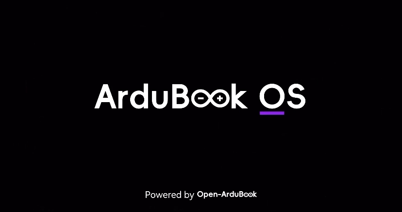

Open-ArduBook 配套文件下载中心
新版编辑器速度更快，自带代码补全、导航与实时调试工具，原版无修改，遵循AGPLv3开源协议 | 官方源码：https://github.com/arduino/arduino-ide
版权归属 Arduino Original Team
16*16国标简体点阵字库，适用于OLED、LCD单片机屏幕渲染
开源免费字库，仅用于嵌入式设备开发
下载地址：点击获取 HZK16 字库文件
开发手册、硬件接线说明、使用教程合集
由 Open-ArduBook 项目组整理发布
驱动库、示例工程、界面主题、工具脚本
开源协议 MIT，可自由二次修改分发